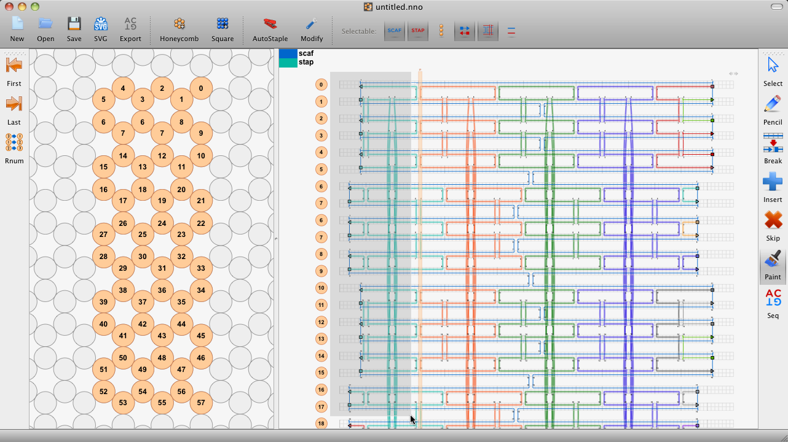

Published by cadnano on Tue, 01/03/2012 - 16:14
After stabilizing the data model in the 2.0 release, we've been busy with some major updates to the cadnano user interface in the last couple months. Read below for what's new.
Download links
Edit: update to 2.1.1
- cadnano 2.1.1 installer (OSX)
- cadnano 2.1.1 Installer (Windows 32 bit)
- cadnano 2.1.1 Installer (Windows 64 bit)
- Platform-specific installation instructions are linked from the download page.
New selection-based workflow
- The interface for editing strands has been significantly changed. Instead of dragging one endpoint at a time, Strand elements can now be selected and dragged simultaneously.
- To extend strands: click and drag to create a rubber-band selection box around the target endpoints, and then click and drag those endpoints as a group.
- To resize the entire interface of a structure, select and drag the crossovers. They will snap to "legal" positions.
- More explanation and links to example YouTube videos can be found in the docs page.
Selection filters
- In order to allow precise selections, we also have added selection filters. You can control whether scaffold and/or staple are selected as well as the the feature type, endpoints, xovers, strands, or helices.
Updated paint tool
- Click and drag to paint multiple strands simultaneously.

No more erase tool
- Selected objects are removed by pressing the delete key. If a crossover is selected, it will be removed but leave strands intact. If one or both endpoints of a strand is selected, the entire strand will be deleted.
Status bar
- Mouse over a position to display the coordinate.
- The "delta" is displayed when dragging selected items.
Automatic scaffold creation
- Cadnano will attempt to "pre-populate" some scaffold strands when you click and drag in the lattice panel.
- Rasterization style can be chosen in the Preferences.
- Use undo to revert to the 3-base stubs.
Appearance changes
- Path endpoints drawn with a border to make them easier to see when zoomed out.
- Sequence labels have been moved "inside" the strand grid in the path view.
- Vertical grid lines are drawn thicker near default staple crossovers (every 7 bases for honeycomb lattice and 8 bases for square lattice).
- Zoom level of detail: grid lines are hidden when zoomed out to make features easier to distinguish.
- Removed some extra file menus & items.
- Added "about cadnano" dialog.
Performance improvements
- Autostaple is faster. It had slowed down significantly compared to cadnano1 due to the new data model architecture. It's still not as fast as the original, but future optimizations should be possible.
- Moving items is faster after disabling QGraphicsScene Item Indexing
Bug fixes
- Fixed a bug in osx installer causing re-installs to fail.
- Fixed bug causing crash when creating new document in maya
- Fixed bug causing some icons to not display.
- Fixed bug causing paint tool to switch to black if color dialog was canceled.
- Fixed bug causing parts to resize smaller improperly.
- Fixed bug with strand merging.